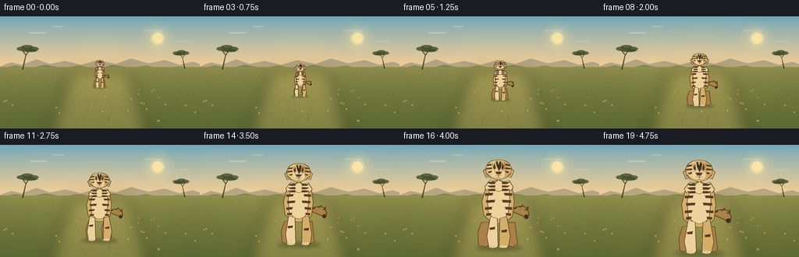
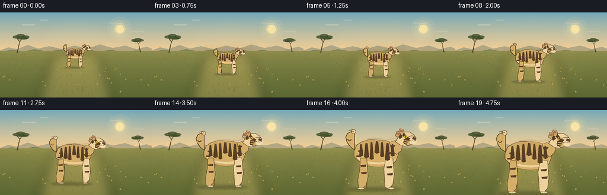
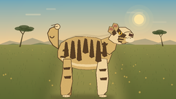
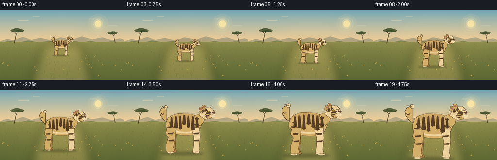

CODING AGENTS AS PIXEL WORLD MODELS
traex/DeepSeek-V4.1-Flash · instance_preservation_0053
点击播放 · 原生 RGB 像素
逐轮保存的候选
回放视频、检查图与代码变化。
每份候选均可单独播放。实际图片检查记录在下方工具轨迹中。
候选 01播放与检查图
点击播放 · 原生 RGB 像素

展开代码变化
--- 上一保存版本
+++ 本次保存版本
@@ -0,0 +1,441 @@
+"""Procedural renderer for "A beige tiger changes from small to big."""
+
+from __future__ import annotations
+
+import math
+from pathlib import Path
+
+import numpy as np
+from PIL import Image, ImageDraw, ImageFilter
+
+import artifact_io
+
+
+WIDTH = 256
+HEIGHT = 144
+FRAMES = 20
+FPS = 4.0
+SCALE = 3
+
+
+def lerp(a, b, t):
+ return a + (b - a) * t
+
+
+def mix(c0, c1, t):
+ return tuple(round(lerp(a, b, t)) for a, b in zip(c0, c1))
+
+
+def poly(draw, points, fill, outline=None, width=1):
+ draw.polygon(points, fill=fill, outline=outline, width=width)
+
+
+def ellipse(draw, box, fill, outline=None, width=1):
+ x0, y0, x1, y1 = box
+ draw.ellipse((min(x0, x1), min(y0, y1), max(x0, x1), max(y0, y1)),
+ fill=fill, outline=outline, width=width)
+
+
+def background(t):
+ """Draw a layered, sunlit savanna at supersampled resolution."""
+ w, h = WIDTH * SCALE, HEIGHT * SCALE
+ image = Image.new("RGB", (w, h), (218, 191, 142))
+ pix = image.load()
+
+ # Smooth warm sky gradient.
+ horizon = int(66 * SCALE)
+ for y in range(horizon + 1):
+ v = y / max(1, horizon)
+ sky = mix((109, 165, 184), (244, 206, 148), v**0.82)
+ for x in range(w):
+ pix[x, y] = sky
+
+ draw = ImageDraw.Draw(image, "RGBA")
+
+ # Pale sun and layered haze.
+ sun_x = int(202 * SCALE)
+ sun_y = int(28 * SCALE)
+ for radius, alpha in ((21, 18), (15, 28), (10, 72), (7, 205)):
+ r = radius * SCALE
+ draw.ellipse((sun_x - r, sun_y - r, sun_x + r, sun_y + r),
+ fill=(255, 232, 166, alpha))
+
+ cloud_shift = 1.2 * math.sin(t * math.pi)
+ clouds = [
+ (37, 20, 59, 8, 78),
+ (67, 12, 81, 5, 54),
+ (184, 17, 208, 7, 44),
+ (222, 31, 242, 5, 35),
+ ]
+ for x0, y0, x1, y1, alpha in clouds:
+ xoff = cloud_shift * (0.5 if x0 < 100 else 1.0)
+ box = ((x0 + xoff) * SCALE, y0 * SCALE,
+ (x1 + xoff) * SCALE, max(y1, y0 + 2) * SCALE)
+ draw.rounded_rectangle(box, radius=3 * SCALE,
+ fill=(250, 230, 193, alpha))
+
+ # Distant blue-grey hills, held mostly behind the tiger's head.
+ far_hills = [(0, 64), (14, 59), (28, 62), (47, 55), (64, 61),
+ (83, 57), (104, 62), (125, 56), (148, 61), (168, 54),
+ (190, 60), (211, 56), (230, 62), (247, 58), (256, 61),
+ (256, 69), (0, 69)]
+ poly(draw, [(x * SCALE, y * SCALE) for x, y in far_hills],
+ (111, 122, 108, 120))
+
+ near_hills = [(0, 67), (19, 63), (39, 66), (58, 62), (80, 66),
+ (101, 63), (124, 67), (145, 62), (168, 66), (187, 63),
+ (207, 67), (229, 64), (256, 66), (256, 77), (0, 77)]
+ poly(draw, [(x * SCALE, y * SCALE) for x, y in near_hills],
+ (112, 124, 82, 205))
+
+ # Ground gradient and broad dry-grass bands.
+ ground_top = 65 * SCALE
+ ground_bottom = h
+ for y in range(ground_top, ground_bottom):
+ v = (y - ground_top) / (ground_bottom - ground_top)
+ color = mix((145, 143, 78), (91, 103, 50), v**0.68)
+ draw.line((0, y, w, y), fill=color)
+
+ # Warm road of light beneath the tiger, giving it a readable silhouette.
+ glow = Image.new("RGBA", (w, h), (0, 0, 0, 0))
+ gd = ImageDraw.Draw(glow)
+ gd.polygon([(91 * SCALE, 68 * SCALE), (165 * SCALE, 68 * SCALE),
+ (190 * SCALE, h), (64 * SCALE, h)],
+ fill=(232, 198, 118, 70))
+ glow = glow.filter(ImageFilter.GaussianBlur(10 * SCALE))
+ image = Image.alpha_composite(image.convert("RGBA"), glow).convert("RGB")
+ draw = ImageDraw.Draw(image, "RGBA")
+
+ # Grass texture: deterministic, increasingly coarse toward the camera.
+ rng = np.random.default_rng(20261111)
+ for i in range(330):
+ y = int(rng.uniform(67, 144))
+ x = int(rng.uniform(0, 256))
+ depth = (y - 67) / 77
+ length = max(1, int(rng.uniform(1, 2 + depth * 5)))
+ sway = math.sin(t * 2 * math.pi + x * 0.07) * depth * 1.3
+ color = (66 + int(depth * 24), 78 + int(depth * 24),
+ 38 + int(depth * 12), int(105 + depth * 80))
+ draw.line(((x * SCALE, y * SCALE),
+ ((x + sway) * SCALE, (y - length) * SCALE)),
+ fill=color, width=max(1, SCALE // 2))
+
+ # Sparse ochre flowers and seed heads.
+ for i in range(38):
+ y = int(rng.uniform(72, 140))
+ x = int(rng.uniform(4, 252))
+ depth = (y - 72) / 68
+ r = max(1, int((0.4 + depth * 1.2) * SCALE))
+ draw.ellipse((x * SCALE - r, y * SCALE - r,
+ x * SCALE + r, y * SCALE + r),
+ fill=(211, 174, 80, 170))
+
+ # Acacia silhouettes at the left and right edges.
+ draw_acacia(draw, 29, 68, 0.82, mirrored=False)
+ draw_acacia(draw, 237, 67, 0.62, mirrored=True)
+ return image
+
+
+def draw_acacia(draw, x, ground_y, scale, mirrored=False):
+ s = SCALE * scale
+ x *= SCALE
+ ground_y *= SCALE
+ sign = -1 if mirrored else 1
+ trunk = (72, 62, 35, 230)
+ foliage = (63, 76, 41, 205)
+ # Split, slightly leaning trunk.
+ draw.polygon([(x - 1.2 * s, ground_y), (x + 1.0 * s, ground_y),
+ (x + 0.4 * s + sign * 5 * s, ground_y - 22 * s),
+ (x - 0.3 * s + sign * 5 * s, ground_y - 22 * s)],
+ fill=trunk)
+ draw.line((x + sign * 4.5 * s, ground_y - 21 * s,
+ x + sign * 10 * s, ground_y - 30 * s),
+ fill=trunk, width=max(2, int(1.5 * s)))
+ draw.line((x + sign * 4.5 * s, ground_y - 23 * s,
+ x - sign * 2 * s, ground_y - 31 * s),
+ fill=trunk, width=max(2, int(1.3 * s)))
+ # Flat umbrella canopy.
+ canopy = [
+ (x + sign * -1 * s, ground_y - 31 * s),
+ (x + sign * 7 * s, ground_y - 34 * s),
+ (x + sign * 18 * s, ground_y - 32 * s),
+ (x + sign * 24 * s, ground_y - 29 * s),
+ (x + sign * 15 * s, ground_y - 28 * s),
+ (x + sign * 6 * s, ground_y - 29 * s),
+ ]
+ draw.polygon(canopy, fill=foliage)
+ for ox, oy, rx, ry in ((-2, -32, 7, 3), (7, -35, 9, 3),
+ (17, -32, 8, 3), (11, -29, 11, 2)):
+ draw.ellipse((x + sign * ox * s - rx * s,
+ ground_y + oy * s - ry * s,
+ x + sign * ox * s + rx * s,
+ ground_y + oy * s + ry * s), fill=foliage)
+
+
+def tiger_geometry(t):
+ """Return smooth perspective growth and walking state."""
+ e = 0.5 - 0.5 * math.cos(math.pi * t)
+ size = lerp(35.0, 119.0, 0.18 * t + 0.82 * e)
+ center_x = lerp(128.0, 128.0, t) + 1.2 * math.sin(t * math.pi * 2)
+ ground_y = lerp(91.0, 139.0, t**0.78)
+ stride = math.sin(t * math.pi * 4)
+ bob = 0.75 * math.sin(t * math.pi * 4 + 0.7)
+ return size, center_x, ground_y + bob, stride
+
+
+def tiger_layer(t, size, cx, ground_y, stride):
+ """Render a front-facing walking tiger on its own supersampled layer."""
+ w, h = WIDTH * SCALE, HEIGHT * SCALE
+ layer = Image.new("RGBA", (w, h), (0, 0, 0, 0))
+ d = ImageDraw.Draw(layer, "RGBA")
+ u = size * SCALE / 100.0
+ x = cx * SCALE
+ y = ground_y * SCALE
+
+ outline = (73, 53, 33, 255)
+ fur = (207, 172, 106, 255)
+ fur_light = (232, 207, 157, 255)
+ fur_shadow = (165, 126, 71, 255)
+ stripe = (78, 55, 34, 245)
+ dark_stripe = (61, 45, 31, 255)
+ inner_ear = (170, 112, 86, 255)
+
+ def p(px, py):
+ return (x + px * u, y - py * u)
+
+ def shape(points, fill):
+ poly(d, [p(px, py) for px, py in points], fill,
+ outline=outline, width=max(1, int(0.9 * SCALE)))
+
+ # Shadow anchors the animal to the ground.
+ shadow = Image.new("RGBA", (w, h), (0, 0, 0, 0))
+ sd = ImageDraw.Draw(shadow)
+ sx0, sy = p(-26, 0)
+ sx1, _ = p(27, 0)
+ sd.ellipse((sx0, sy - 3.0 * u, sx1, sy + 3.2 * u),
+ fill=(32, 35, 20, 82))
+ shadow = shadow.filter(ImageFilter.GaussianBlur(2.0 * u))
+ layer = Image.alpha_composite(layer, shadow)
+ d = ImageDraw.Draw(layer, "RGBA")
+
+ # Tail behind the body, with a curling tip visible on the right.
+ tail_points = [p(11, 43), p(20, 47), p(28, 48), p(33, 45),
+ p(35, 38), p(32, 34), p(28, 36)]
+ poly(d, tail_points, fur_shadow, outline=outline,
+ width=max(1, int(1.0 * SCALE)))
+ for px, py, ang in ((18, 47, 20), (25, 49, -8), (31, 46, -35)):
+ a, b = p(px, py)
+ rr = 2.8 * u
+ d.arc((a - rr, b - rr, a + rr, b + rr),
+ ang, ang + 150, fill=stripe, width=max(2, int(1.5 * u)))
+ ellipse(d, (p(31.5, 35.5)[0] - 2.4 * u, p(31.5, 35.5)[1] - 2.4 * u,
+ p(31.5, 35.5)[0] + 2.4 * u, p(31.5, 35.5)[1] + 2.4 * u),
+ dark_stripe)
+
+ # Back legs, deliberately offset for a readable walking cycle.
+ back_l = stride * 2.1
+ back_r = -stride * 2.1
+ shape([(-18 + back_l, 29), (-9 + back_l, 30), (-7 + back_l, 5),
+ (-12 + back_l, 1), (-21 + back_l, 3), (-22 + back_l, 17)],
+ fur_shadow)
+ shape([(8 + back_r, 29), (17 + back_r, 29), (20 + back_r, 4),
+ (14 + back_r, 1), (6 + back_r, 4), (5 + back_r, 18)],
+ fur_shadow)
+
+ # Main torso: broad chest tapering toward the hips.
+ torso = [(-15, 68), (-8, 76), (0, 78), (8, 75), (16, 67),
+ (18, 53), (16, 36), (9, 30), (0, 28), (-9, 30),
+ (-17, 37), (-19, 53)]
+ shape(torso, fur)
+
+ # Chest and belly highlight.
+ ellipse(d, (p(-12, 32)[0], p(-12, 32)[1],
+ p(12, 70)[0], p(12, 70)[1]), fur_light)
+ d.rectangle((p(-10, 35)[0], p(10, 63)[1],
+ p(10, 63)[0], p(-10, 35)[1]), fill=fur_light)
+ # Restore the torso silhouette around the highlight.
+ shape([(-10, 68), (-7, 73), (0, 74), (7, 72), (12, 66),
+ (13, 58), (11, 39), (6, 33), (0, 32), (-6, 33),
+ (-12, 40), (-13, 57)], fur_light)
+
+ # Shoulder/body stripes.
+ for side in (-1, 1):
+ base_x = 14 * side
+ for idx, (yy, length, lean) in enumerate(((68, 7, 2),
+ (61, 9, 3),
+ (53, 10, 2),
+ (45, 8, 1),
+ (38, 6, 0))):
+ xx = base_x + side * (idx % 2) * 1.2
+ pts = [p(xx, yy + 1.2), p(xx - side * length, yy + 1.8),
+ p(xx - side * (length - 1), yy - 1.0),
+ p(xx, yy - 1.6)]
+ poly(d, pts, stripe)
+
+ # Front legs, alternating and overlapping the chest.
+ front_l = -stride * 2.9
+ front_r = stride * 2.9
+ leg_l = [(-12 + front_l, 36), (-4 + front_l, 34),
+ (-3 + front_l, 2), (-8 + front_l, 0),
+ (-14 + front_l, 2), (-16 + front_l, 13)]
+ leg_r = [(4 + front_r, 34), (12 + front_r, 36),
+ (16 + front_r, 13), (14 + front_r, 2),
+ (8 + front_r, 0), (3 + front_r, 2)]
+ shape(leg_l, fur_light)
+ shape(leg_r, fur)
+ # Forearm bands.
+ for side, leg_shift, y0 in ((-1, front_l, 22), (1, front_r, 19)):
+ cx0 = (10 if side < 0 else 9) * side + leg_shift
+ pts = [p(cx0 - 3.0, y0 + 1), p(cx0 + 3.2, y0 + 2),
+ p(cx0 + 2.7, y0 - 1), p(cx0 - 2.5, y0 - 1.4)]
+ poly(d, pts, stripe)
+ # Soft paws.
+ for side, shift in ((-1, front_l), (1, front_r)):
+ px = (9 if side < 0 else 8) * side + shift
+ ellipse(d, (p(px - 4.5, 2.8)[0], p(px - 4.5, 2.8)[1],
+ p(px + 4.5, 0)[0], p(px + 4.5, 0)[1]), fur_light)
+ for toe in (-2.0, 0.8):
+ a, b = p(px + toe, 0.7)
+ d.line((a, b, a, b - 1.4 * u), fill=(128, 96, 58, 210),
+ width=max(1, SCALE // 2))
+
+ # Neck ruff creates a broad, feline head-to-body transition.
+ ruff = [(-16, 70), (-10, 77), (-4, 75), (0, 78), (5, 75),
+ (12, 77), (17, 69), (14, 65), (8, 67), (0, 64),
+ (-8, 67), (-14, 65)]
+ shape(ruff, fur_light)
+ for side in (-1, 1):
+ for yy in (66, 70, 74):
+ pts = [p(4 * side, yy + 1.6), p(13 * side, yy + 1),
+ p(10 * side, yy - 1), p(4 * side, yy - 1)]
+ poly(d, pts, stripe)
+
+ # Ears behind the head.
+ ear_y = 87
+ for side in (-1, 1):
+ ex = 10.5 * side
+ ear = [(ex - 7 * side, ear_y - 3), (ex - 1 * side, ear_y + 7),
+ (ex + 7 * side, ear_y + 1), (ex + 4 * side, ear_y - 7)]
+ shape(ear, fur)
+ inner = [(ex - 4.2 * side, ear_y - 2.6),
+ (ex - 1.0 * side, ear_y + 4.0),
+ (ex + 4.3 * side, ear_y + 0.5),
+ (ex + 2.6 * side, ear_y - 4.2)]
+ poly(d, [p(px, py) for px, py in inner], inner_ear)
+
+ # Rounded head with two cheek planes.
+ head = [(-9, 80), (-14, 85), (-15, 91), (-12, 97),
+ (-7, 100), (0, 101), (7, 100), (12, 97),
+ (15, 91), (14, 85), (9, 80), (0, 77)]
+ shape(head, fur)
+ ellipse(d, (p(-12, 81)[0], p(-12, 81)[1],
+ p(0, 99)[0], p(0, 99)[1]), mix(fur_light, fur, 0.32))
+ ellipse(d, (p(0, 81)[0], p(0, 81)[1],
+ p(12, 99)[0], p(12, 99)[1]), mix(fur, fur_shadow, 0.18))
+
+ # Forehead stripes and brow markings.
+ for pts in (
+ [(-1.5, 99), (0, 94), (1.5, 99), (3.2, 97), (2.5, 92),
+ (0.5, 88), (-2.0, 93), (-3.0, 98)],
+ [(-7.0, 97), (-5.5, 92), (-4.6, 97), (-3.8, 93),
+ (-4.0, 89), (-6.0, 92)],
+ [(7.0, 97), (5.5, 92), (4.6, 97), (3.8, 93),
+ (4.0, 89), (6.0, 92)],
+ ):
+ poly(d, [p(px, py) for px, py in pts], dark_stripe)
+
+ # Eyes: amber irises, dark pupils and a small catchlight.
+ for side in (-1, 1):
+ ex = 6.0 * side
+ ellipse(d, (p(ex - 3.8, 91.0)[0], p(ex - 3.8, 91.0)[1],
+ p(ex + 3.8, 91.0)[0], p(ex + 3.8, 91.0)[1]),
+ (224, 178, 64, 255), outline=outline,
+ width=max(1, int(0.55 * SCALE)))
+ ellipse(d, (p(ex - 1.15, 90.9)[0], p(ex - 1.15, 90.9)[1],
+ p(ex + 1.15, 90.9)[0], p(ex + 1.15, 90.9)[1]),
+ (34, 29, 21, 255))
+ ellipse(d, (p(ex - 0.4, 92.0)[0], p(ex - 0.4, 92.0)[1],
+ p(ex + 0.35, 92.0)[0], p(ex + 0.35, 92.0)[1]),
+ (255, 249, 222, 255))
+
+ # Pale muzzle, nose and mouth.
+ ellipse(d, (p(-7, 80)[0], p(-7, 80)[1],
+ p(0, 89)[0], p(0, 89)[1]), fur_light)
+ ellipse(d, (p(0, 80)[0], p(0, 80)[1],
+ p(7, 89)[0], p(7, 89)[1]), fur_light)
+ nose = [(-3.4, 87.0), (3.4, 87.0), (2.1, 84.3),
+ (-2.1, 84.3)]
+ poly(d, [p(px, py) for px, py in nose], (89, 55, 45, 255),
+ outline=outline, width=max(1, int(0.5 * SCALE)))
+ d.line((p(0, 84.4), p(0, 82.0)), fill=outline,
+ width=max(1, int(0.7 * SCALE)))
+ d.arc((p(-4, 83)[0], p(-4, 83)[1], p(0, 79)[0], p(0, 79)[1]),
+ 205, 345, fill=outline, width=max(1, int(0.65 * SCALE)))
+ d.arc((p(0, 83)[0], p(0, 83)[1], p(4, 79)[0], p(4, 79)[1]),
+ 195, 335, fill=outline, width=max(1, int(0.65 * SCALE)))
+
+ # Cheek whisker pads and small dark freckles.
+ for side in (-1, 1):
+ for yy in (85.5, 87.0, 88.4):
+ ex = side * (3.4 + (yy - 85.0) * 0.4)
+ r = max(1, int(0.32 * u))
+ a, b = p(ex, yy)
+ d.ellipse((a - r, b - r, a + r, b + r), fill=(112, 82, 60, 210))
+ for yy in (85.7, 87.5):
+ x0, y0 = p(side * 5.5, yy)
+ x1, y1 = p(side * 16, yy + 0.5 + side * 0.5)
+ d.line((x0, y0, x1, y1), fill=(245, 232, 202, 205),
+ width=max(1, SCALE // 2))
+
+ # Head stripes on both cheeks.
+ for side in (-1, 1):
+ for yy, length in ((96, 5.5), (92, 6.5), (88, 4.0)):
+ x_in = 8.0
+ pts = [(x_in * side, yy), ((x_in + length) * side, yy - 1.1),
+ ((x_in + length - 1) * side, yy - 2.5),
+ (x_in * side, yy - 2.0)]
+ poly(d, [p(px, py) for px, py in pts], stripe)
+
+ # Warm rim light along the upper-left contour.
+ rim = Image.new("RGBA", (w, h), (0, 0, 0, 0))
+ rd = ImageDraw.Draw(rim)
+ rd.arc((p(-15.5, 101)[0], p(-15.5, 101)[1],
+ p(15.5, 76)[0], p(15.5, 76)[1]),
+ 92, 183, fill=(255, 231, 169, 105),
+ width=max(1, int(1.1 * SCALE)))
+ rim = rim.filter(ImageFilter.GaussianBlur(0.55 * u))
+ layer = Image.alpha_composite(layer, rim)
+
+ # A light film-grain pass keeps flat areas from looking synthetic.
+ arr = np.asarray(layer, dtype=np.int16)
+ grain = np.random.default_rng(1000 + int(t * 1000)).normal(0, 2.1, (h, w, 1))
+ arr[:, :, :3] = np.clip(arr[:, :, :3] + grain, 0, 255)
+ return Image.fromarray(arr.astype(np.uint8), "RGBA")
+
+
+def render():
+ frames = []
+ for i in range(FRAMES):
+ t = i / (FRAMES - 1)
+ image = background(t).convert("RGBA")
+ size, cx, ground_y, stride = tiger_geometry(t)
+ tiger = tiger_layer(t, size, cx, ground_y, stride)
+ image = Image.alpha_composite(image, tiger)
+
+ # Gentle warm sunlight bloom around the tiger, concentrated on its rim.
+ arr = np.asarray(image.convert("RGB"), dtype=np.float32)
+ yy, xx = np.mgrid[0:arr.shape[0], 0:arr.shape[1]]
+ glow = np.clip(1.0 - np.hypot(xx - cx * SCALE,
+ yy - (ground_y - size * 0.55) * SCALE)
+ / (size * SCALE * 1.7), 0.0, 1.0)
+ arr += glow[:, :, None] * np.array([8.0, 5.0, 1.0], dtype=np.float32)
+ image = Image.fromarray(np.clip(arr, 0, 255).astype(np.uint8), "RGB")
+ image = image.resize((WIDTH, HEIGHT), Image.Resampling.LANCZOS)
+ frames.append(np.asarray(image, dtype=np.uint8))
+ return np.stack(frames)
+
+
+if __name__ == "__main__":
+ case_dir = Path(__file__).resolve().parent
+ artifact_io.save(render(), case_dir)
+ print(f"Wrote {FRAMES} frames to {case_dir}")
候选 02播放与检查图
点击播放 · 原生 RGB 像素

展开代码变化
--- 上一保存版本
+++ 本次保存版本
@@ -175,16 +175,16 @@
def tiger_geometry(t):
"""Return smooth perspective growth and walking state."""
e = 0.5 - 0.5 * math.cos(math.pi * t)
- size = lerp(35.0, 119.0, 0.18 * t + 0.82 * e)
- center_x = lerp(128.0, 128.0, t) + 1.2 * math.sin(t * math.pi * 2)
- ground_y = lerp(91.0, 139.0, t**0.78)
+ size = lerp(43.0, 116.0, 0.16 * t + 0.84 * e)
+ center_x = 128.0 + 0.9 * math.sin(t * math.pi * 2)
+ ground_y = lerp(93.0, 141.0, t**0.78)
stride = math.sin(t * math.pi * 4)
- bob = 0.75 * math.sin(t * math.pi * 4 + 0.7)
+ bob = 0.65 * math.sin(t * math.pi * 4 + 0.7)
return size, center_x, ground_y + bob, stride
def tiger_layer(t, size, cx, ground_y, stride):
- """Render a front-facing walking tiger on its own supersampled layer."""
+ """Render a right-facing walking tiger on its own supersampled layer."""
w, h = WIDTH * SCALE, HEIGHT * SCALE
layer = Image.new("RGBA", (w, h), (0, 0, 0, 0))
d = ImageDraw.Draw(layer, "RGBA")
@@ -210,200 +210,170 @@
# Shadow anchors the animal to the ground.
shadow = Image.new("RGBA", (w, h), (0, 0, 0, 0))
sd = ImageDraw.Draw(shadow)
- sx0, sy = p(-26, 0)
- sx1, _ = p(27, 0)
+ sx0, sy = p(-48, 0)
+ sx1, _ = p(34, 0)
sd.ellipse((sx0, sy - 3.0 * u, sx1, sy + 3.2 * u),
fill=(32, 35, 20, 82))
shadow = shadow.filter(ImageFilter.GaussianBlur(2.0 * u))
layer = Image.alpha_composite(layer, shadow)
d = ImageDraw.Draw(layer, "RGBA")
- # Tail behind the body, with a curling tip visible on the right.
- tail_points = [p(11, 43), p(20, 47), p(28, 48), p(33, 45),
- p(35, 38), p(32, 34), p(28, 36)]
- poly(d, tail_points, fur_shadow, outline=outline,
- width=max(1, int(1.0 * SCALE)))
- for px, py, ang in ((18, 47, 20), (25, 49, -8), (31, 46, -35)):
- a, b = p(px, py)
- rr = 2.8 * u
+ # Far pair of legs, muted by atmosphere and the body.
+ far_l = 2.1 * stride
+ far_r = -2.1 * stride
+ for hip_x, shift, col in ((-24, far_r, fur_shadow), (18, far_l, fur_shadow)):
+ shape([(hip_x - 5 + shift, 42), (hip_x + 5 + shift, 44),
+ (hip_x + 3.5 + shift, 3), (hip_x - 1.0 + shift, 1),
+ (hip_x - 5 + shift, 3), (hip_x - 7 + shift, 22)], col)
+
+ # Tail rises from the rump and curls in a loose S.
+ tail_outline = [( -37, 60), (-44, 65), (-49, 72), (-51, 80),
+ (-48, 86), (-42, 89), (-37, 87)]
+ poly(d, [p(px, py) for px, py in tail_outline], fur,
+ outline=outline, width=max(1, int(1.1 * SCALE)))
+ # Tapered tail tip.
+ ellipse(d, (p(-42, 92)[0], p(-42, 92)[1],
+ p(-35, 85)[0], p(-35, 85)[1]), fur_light,
+ outline=outline, width=max(1, int(0.8 * SCALE)))
+ for angle in (8, 48, 88, 128):
+ a, b = p(-45, 77)
+ rr = 3.0 * u
d.arc((a - rr, b - rr, a + rr, b + rr),
- ang, ang + 150, fill=stripe, width=max(2, int(1.5 * u)))
- ellipse(d, (p(31.5, 35.5)[0] - 2.4 * u, p(31.5, 35.5)[1] - 2.4 * u,
- p(31.5, 35.5)[0] + 2.4 * u, p(31.5, 35.5)[1] + 2.4 * u),
- dark_stripe)
-
- # Back legs, deliberately offset for a readable walking cycle.
- back_l = stride * 2.1
- back_r = -stride * 2.1
- shape([(-18 + back_l, 29), (-9 + back_l, 30), (-7 + back_l, 5),
- (-12 + back_l, 1), (-21 + back_l, 3), (-22 + back_l, 17)],
- fur_shadow)
- shape([(8 + back_r, 29), (17 + back_r, 29), (20 + back_r, 4),
- (14 + back_r, 1), (6 + back_r, 4), (5 + back_r, 18)],
- fur_shadow)
-
- # Main torso: broad chest tapering toward the hips.
- torso = [(-15, 68), (-8, 76), (0, 78), (8, 75), (16, 67),
- (18, 53), (16, 36), (9, 30), (0, 28), (-9, 30),
- (-17, 37), (-19, 53)]
+ angle, angle + 48, fill=stripe, width=max(2, int(1.35 * u)))
+ for yy in (87, 90):
+ a0, b0 = p(-46, yy)
+ a1, b1 = p(-38, yy + 2)
+ d.line((a0, b0, a1, b1), fill=stripe,
+ width=max(1, int(1.0 * u)))
+
+ # Long side-profile torso with a high shoulder and low belly.
+ torso = [(-38, 58), (-34, 68), (-26, 73), (-16, 76), (-3, 76),
+ (10, 75), (21, 71), (28, 64), (30, 54), (26, 43),
+ (20, 37), (10, 35), (0, 34), (-12, 35), (-23, 38),
+ (-31, 43), (-38, 50)]
shape(torso, fur)
- # Chest and belly highlight.
- ellipse(d, (p(-12, 32)[0], p(-12, 32)[1],
- p(12, 70)[0], p(12, 70)[1]), fur_light)
- d.rectangle((p(-10, 35)[0], p(10, 63)[1],
- p(10, 63)[0], p(-10, 35)[1]), fill=fur_light)
- # Restore the torso silhouette around the highlight.
- shape([(-10, 68), (-7, 73), (0, 74), (7, 72), (12, 66),
- (13, 58), (11, 39), (6, 33), (0, 32), (-6, 33),
- (-12, 40), (-13, 57)], fur_light)
-
- # Shoulder/body stripes.
- for side in (-1, 1):
- base_x = 14 * side
- for idx, (yy, length, lean) in enumerate(((68, 7, 2),
- (61, 9, 3),
- (53, 10, 2),
- (45, 8, 1),
- (38, 6, 0))):
- xx = base_x + side * (idx % 2) * 1.2
- pts = [p(xx, yy + 1.2), p(xx - side * length, yy + 1.8),
- p(xx - side * (length - 1), yy - 1.0),
- p(xx, yy - 1.6)]
- poly(d, pts, stripe)
-
- # Front legs, alternating and overlapping the chest.
- front_l = -stride * 2.9
- front_r = stride * 2.9
- leg_l = [(-12 + front_l, 36), (-4 + front_l, 34),
- (-3 + front_l, 2), (-8 + front_l, 0),
- (-14 + front_l, 2), (-16 + front_l, 13)]
- leg_r = [(4 + front_r, 34), (12 + front_r, 36),
- (16 + front_r, 13), (14 + front_r, 2),
- (8 + front_r, 0), (3 + front_r, 2)]
- shape(leg_l, fur_light)
- shape(leg_r, fur)
- # Forearm bands.
- for side, leg_shift, y0 in ((-1, front_l, 22), (1, front_r, 19)):
- cx0 = (10 if side < 0 else 9) * side + leg_shift
- pts = [p(cx0 - 3.0, y0 + 1), p(cx0 + 3.2, y0 + 2),
- p(cx0 + 2.7, y0 - 1), p(cx0 - 2.5, y0 - 1.4)]
- poly(d, pts, stripe)
- # Soft paws.
- for side, shift in ((-1, front_l), (1, front_r)):
- px = (9 if side < 0 else 8) * side + shift
- ellipse(d, (p(px - 4.5, 2.8)[0], p(px - 4.5, 2.8)[1],
- p(px + 4.5, 0)[0], p(px + 4.5, 0)[1]), fur_light)
- for toe in (-2.0, 0.8):
- a, b = p(px + toe, 0.7)
- d.line((a, b, a, b - 1.4 * u), fill=(128, 96, 58, 210),
+ # Layered fur planes: pale belly and warm shaded flank.
+ belly = [(-33, 47), (-25, 42), (-14, 39), (0, 38), (13, 39),
+ (23, 43), (27, 48), (22, 44), (12, 42), (0, 41),
+ (-14, 42), (-25, 45), (-33, 51)]
+ poly(d, [p(px, py) for px, py in belly], fur_light)
+ flank = [(-29, 69), (-19, 74), (-4, 76), (10, 74), (20, 69),
+ (24, 61), (16, 60), (4, 63), (-9, 62), (-20, 64)]
+ poly(d, [p(px, py) for px, py in flank], mix(fur, fur_shadow, 0.20))
+
+ # Neck and head, facing right.
+ shape([(16, 72), (27, 76), (34, 77), (37, 70), (34, 59),
+ (27, 53), (20, 58)], fur)
+ head = [(25, 73), (31, 82), (39, 88), (47, 88), (53, 84),
+ (57, 79), (56, 73), (51, 70), (46, 67), (39, 66),
+ (32, 68)]
+ shape(head, fur_light)
+ # Lower jaw and cheek, rounded.
+ shape([(37, 72), (43, 67), (51, 69), (56, 73), (55, 78),
+ (49, 81), (41, 79)], fur)
+ # Muzzle planes.
+ ellipse(d, (p(44, 82)[0], p(44, 82)[1],
+ p(57, 74)[0], p(57, 74)[1]), fur_light,
+ outline=outline, width=max(1, int(0.75 * SCALE)))
+ ellipse(d, (p(47, 75)[0], p(47, 75)[1],
+ p(58, 69)[0], p(58, 69)[1]), mix(fur_light, (245, 230, 198), 0.4))
+
+ # Rounded ears: one upright and one slightly back.
+ for ex, ey, er, tilt in ((34, 88, 5.0, -8), (29, 84, 4.1, -15)):
+ ear = [(ex - er, ey - 2), (ex - 2, ey + 5), (ex + 3, ey + 4),
+ (ex + er, ey - 1), (ex + 2, ey - 6)]
+ shape(ear, fur)
+ inner = [(ex - 2.7, ey), (ex - 1.0, ey + 3.2),
+ (ex + 2.0, ey + 2.6), (ex + 2.6, ey - 0.5)]
+ poly(d, [p(px, py) for px, py in inner], inner_ear)
+
+ # Ear fur and forehead stripes.
+ for pts in (
+ [(38, 87), (42, 82), (39, 79), (36, 83)],
+ [(33, 85), (36, 80), (32, 77), (30, 81)],
+ [(42, 81), (48, 78), (45, 74), (41, 76)],
+ ):
+ poly(d, [p(px, py) for px, py in pts], stripe)
+
+ # Eye, brow and cheek stripe.
+ ellipse(d, (p(38, 82.5)[0], p(38, 82.5)[1],
+ p(43, 78.0)[0], p(43, 78.0)[1]),
+ (220, 169, 53, 255), outline=outline,
+ width=max(1, int(0.6 * SCALE)))
+ ellipse(d, (p(40.0, 82.0)[0], p(40.0, 82.0)[1],
+ p(41.3, 79.3)[0], p(41.3, 79.3)[1]), (31, 28, 20, 255))
+ ellipse(d, (p(40.1, 81.5)[0], p(40.1, 81.5)[1],
+ p(40.6, 80.9)[0], p(40.6, 80.9)[1]), (255, 250, 224, 255))
+ for yy, length in ((77, 8), (74, 7), (71, 5)):
+ pts = [(38, yy), (38 + length, yy - 1),
+ (38 + length - 1, yy - 2.4), (38, yy - 1.8)]
+ poly(d, [p(px, py) for px, py in pts], stripe)
+
+ # Nose, mouth and chin.
+ nose = [(52, 80), (57, 78.5), (55, 76), (51, 77)]
+ poly(d, [p(px, py) for px, py in nose], (87, 55, 45, 255),
+ outline=outline, width=max(1, int(0.55 * SCALE)))
+ a, b = p(53.5, 76.0)
+ c, e = p(53.5, 73.5)
+ d.line((a, b, c, e), fill=outline, width=max(1, int(0.65 * SCALE)))
+ d.arc((p(49, 74.5)[0], p(49, 74.5)[1],
+ p(53.5, 70.5)[0], p(53.5, 70.5)[1]),
+ 198, 340, fill=outline, width=max(1, int(0.6 * SCALE)))
+
+ # Near pair of legs with a clear diagonal gait.
+ near_l = -2.9 * stride
+ near_r = 2.9 * stride
+ hind = [(-31 + near_l, 48), (-21 + near_l, 48),
+ (-19 + near_l, 20), (-22 + near_l, 6), (-28 + near_l, 1),
+ (-34 + near_l, 3), (-35 + near_l, 15), (-32 + near_l, 30)]
+ fore = [(13 + near_r, 49), (24 + near_r, 48),
+ (26 + near_r, 23), (24 + near_r, 7), (18 + near_r, 1),
+ (12 + near_r, 3), (11 + near_r, 17), (10 + near_r, 31)]
+ shape(hind, fur)
+ shape(fore, fur_light)
+
+ # Leg stripes and paws.
+ for base, shift, y0 in ((-26, near_l, 36), (-25, near_l, 25),
+ (19, near_r, 34), (20, near_r, 23)):
+ pts = [(base + shift - 5, y0 + 1), (base + shift + 4, y0 + 1.8),
+ (base + shift + 3, y0 - 1.4), (base + shift - 4, y0 - 1.5)]
+ poly(d, [p(px, py) for px, py in pts], stripe)
+ for px, shift in ((-27, near_l), (19, near_r)):
+ ellipse(d, (p(px - 5.3, 3)[0], p(px - 5.3, 3)[1],
+ p(px + 4.8, 0)[0], p(px + 4.8, 0)[1]), fur_light,
+ outline=outline, width=max(1, int(0.65 * SCALE)))
+ for toe in (-2.4, 0.2):
+ a, b = p(px + shift + toe, 0.8)
+ d.line((a, b, a, b - 1.2 * u), fill=(125, 91, 55, 210),
width=max(1, SCALE // 2))
- # Neck ruff creates a broad, feline head-to-body transition.
- ruff = [(-16, 70), (-10, 77), (-4, 75), (0, 78), (5, 75),
- (12, 77), (17, 69), (14, 65), (8, 67), (0, 64),
- (-8, 67), (-14, 65)]
- shape(ruff, fur_light)
- for side in (-1, 1):
- for yy in (66, 70, 74):
- pts = [p(4 * side, yy + 1.6), p(13 * side, yy + 1),
- p(10 * side, yy - 1), p(4 * side, yy - 1)]
- poly(d, pts, stripe)
-
- # Ears behind the head.
- ear_y = 87
- for side in (-1, 1):
- ex = 10.5 * side
- ear = [(ex - 7 * side, ear_y - 3), (ex - 1 * side, ear_y + 7),
- (ex + 7 * side, ear_y + 1), (ex + 4 * side, ear_y - 7)]
- shape(ear, fur)
- inner = [(ex - 4.2 * side, ear_y - 2.6),
- (ex - 1.0 * side, ear_y + 4.0),
- (ex + 4.3 * side, ear_y + 0.5),
- (ex + 2.6 * side, ear_y - 4.2)]
- poly(d, [p(px, py) for px, py in inner], inner_ear)
-
- # Rounded head with two cheek planes.
- head = [(-9, 80), (-14, 85), (-15, 91), (-12, 97),
- (-7, 100), (0, 101), (7, 100), (12, 97),
- (15, 91), (14, 85), (9, 80), (0, 77)]
- shape(head, fur)
- ellipse(d, (p(-12, 81)[0], p(-12, 81)[1],
- p(0, 99)[0], p(0, 99)[1]), mix(fur_light, fur, 0.32))
- ellipse(d, (p(0, 81)[0], p(0, 81)[1],
- p(12, 99)[0], p(12, 99)[1]), mix(fur, fur_shadow, 0.18))
-
- # Forehead stripes and brow markings.
- for pts in (
- [(-1.5, 99), (0, 94), (1.5, 99), (3.2, 97), (2.5, 92),
- (0.5, 88), (-2.0, 93), (-3.0, 98)],
- [(-7.0, 97), (-5.5, 92), (-4.6, 97), (-3.8, 93),
- (-4.0, 89), (-6.0, 92)],
- [(7.0, 97), (5.5, 92), (4.6, 97), (3.8, 93),
- (4.0, 89), (6.0, 92)],
- ):
- poly(d, [p(px, py) for px, py in pts], dark_stripe)
-
- # Eyes: amber irises, dark pupils and a small catchlight.
- for side in (-1, 1):
- ex = 6.0 * side
- ellipse(d, (p(ex - 3.8, 91.0)[0], p(ex - 3.8, 91.0)[1],
- p(ex + 3.8, 91.0)[0], p(ex + 3.8, 91.0)[1]),
- (224, 178, 64, 255), outline=outline,
- width=max(1, int(0.55 * SCALE)))
- ellipse(d, (p(ex - 1.15, 90.9)[0], p(ex - 1.15, 90.9)[1],
- p(ex + 1.15, 90.9)[0], p(ex + 1.15, 90.9)[1]),
- (34, 29, 21, 255))
- ellipse(d, (p(ex - 0.4, 92.0)[0], p(ex - 0.4, 92.0)[1],
- p(ex + 0.35, 92.0)[0], p(ex + 0.35, 92.0)[1]),
- (255, 249, 222, 255))
-
- # Pale muzzle, nose and mouth.
- ellipse(d, (p(-7, 80)[0], p(-7, 80)[1],
- p(0, 89)[0], p(0, 89)[1]), fur_light)
- ellipse(d, (p(0, 80)[0], p(0, 80)[1],
- p(7, 89)[0], p(7, 89)[1]), fur_light)
- nose = [(-3.4, 87.0), (3.4, 87.0), (2.1, 84.3),
- (-2.1, 84.3)]
- poly(d, [p(px, py) for px, py in nose], (89, 55, 45, 255),
- outline=outline, width=max(1, int(0.5 * SCALE)))
- d.line((p(0, 84.4), p(0, 82.0)), fill=outline,
- width=max(1, int(0.7 * SCALE)))
- d.arc((p(-4, 83)[0], p(-4, 83)[1], p(0, 79)[0], p(0, 79)[1]),
- 205, 345, fill=outline, width=max(1, int(0.65 * SCALE)))
- d.arc((p(0, 83)[0], p(0, 83)[1], p(4, 79)[0], p(4, 79)[1]),
- 195, 335, fill=outline, width=max(1, int(0.65 * SCALE)))
-
- # Cheek whisker pads and small dark freckles.
- for side in (-1, 1):
- for yy in (85.5, 87.0, 88.4):
- ex = side * (3.4 + (yy - 85.0) * 0.4)
- r = max(1, int(0.32 * u))
- a, b = p(ex, yy)
- d.ellipse((a - r, b - r, a + r, b + r), fill=(112, 82, 60, 210))
- for yy in (85.7, 87.5):
- x0, y0 = p(side * 5.5, yy)
- x1, y1 = p(side * 16, yy + 0.5 + side * 0.5)
- d.line((x0, y0, x1, y1), fill=(245, 232, 202, 205),
- width=max(1, SCALE // 2))
-
- # Head stripes on both cheeks.
- for side in (-1, 1):
- for yy, length in ((96, 5.5), (92, 6.5), (88, 4.0)):
- x_in = 8.0
- pts = [(x_in * side, yy), ((x_in + length) * side, yy - 1.1),
- ((x_in + length - 1) * side, yy - 2.5),
- (x_in * side, yy - 2.0)]
- poly(d, [p(px, py) for px, py in pts], stripe)
-
- # Warm rim light along the upper-left contour.
+ # Vertical body stripes that follow the ribcage, alternating length.
+ for idx, xx in enumerate((-28, -20, -12, -4, 4, 12, 20)):
+ top = 74 - abs(xx + 4) * 0.18
+ length = 18 + (idx % 3) * 4
+ width0 = 2.0 + (idx % 2) * 0.7
+ pts = [(xx, top), (xx + width0, top - 1.0),
+ (xx + width0 + 2.0, top - length),
+ (xx + 0.3, top - length - 1.4),
+ (xx - width0, top - length + 0.5),
+ (xx - 0.8, top - 3.0)]
+ poly(d, [p(px, py) for px, py in pts], stripe)
+
+ # A few short shoulder bars, leaving the pale flank readable.
+ for xx, yy in ((18, 68), (14, 57), (-31, 60), (-34, 52)):
+ pts = [(xx, yy), (xx + 7, yy - 0.5),
+ (xx + 5.5, yy - 3.0), (xx - 1, yy - 2.2)]
+ poly(d, [p(px, py) for px, py in pts], stripe)
+
+ # Warm rim light catches the head, shoulder and back.
rim = Image.new("RGBA", (w, h), (0, 0, 0, 0))
rd = ImageDraw.Draw(rim)
- rd.arc((p(-15.5, 101)[0], p(-15.5, 101)[1],
- p(15.5, 76)[0], p(15.5, 76)[1]),
- 92, 183, fill=(255, 231, 169, 105),
- width=max(1, int(1.1 * SCALE)))
- rim = rim.filter(ImageFilter.GaussianBlur(0.55 * u))
+ rim_pts = [p(-31, 71), p(-16, 77), p(-2, 78), p(13, 76),
+ p(25, 78), p(33, 85), p(39, 90)]
+ rd.line(rim_pts, fill=(255, 232, 171, 100),
+ width=max(1, int(1.2 * SCALE)), joint="curve")
+ rim = rim.filter(ImageFilter.GaussianBlur(0.45 * u))
layer = Image.alpha_composite(layer, rim)
# A light film-grain pass keeps flat areas from looking synthetic.
候选 03播放与检查图

候选 04播放与检查图
点击播放 · 原生 RGB 像素

展开代码变化
--- 上一保存版本
+++ 本次保存版本
@@ -175,7 +175,7 @@
def tiger_geometry(t):
"""Return smooth perspective growth and walking state."""
e = 0.5 - 0.5 * math.cos(math.pi * t)
- size = lerp(43.0, 116.0, 0.16 * t + 0.84 * e)
+ size = lerp(42.0, 122.0, 0.16 * t + 0.84 * e)
center_x = 128.0 + 0.9 * math.sin(t * math.pi * 2)
ground_y = lerp(93.0, 141.0, t**0.78)
stride = math.sin(t * math.pi * 4)
@@ -221,10 +221,18 @@
# Far pair of legs, muted by atmosphere and the body.
far_l = 2.1 * stride
far_r = -2.1 * stride
- for hip_x, shift, col in ((-24, far_r, fur_shadow), (18, far_l, fur_shadow)):
- shape([(hip_x - 5 + shift, 42), (hip_x + 5 + shift, 44),
- (hip_x + 3.5 + shift, 3), (hip_x - 1.0 + shift, 1),
- (hip_x - 5 + shift, 3), (hip_x - 7 + shift, 22)], col)
+ far_hind = [(-30 + far_r, 45), (-17 + far_r, 45),
+ (-19 + far_r, 26), (-20 + far_r, 9),
+ (-17 + far_r, 3), (-23 + far_r, 1),
+ (-28 + far_r, 3), (-29 + far_r, 13),
+ (-25 + far_r, 27), (-31 + far_r, 33)]
+ far_fore = [(11 + far_l, 46), (24 + far_l, 46),
+ (26 + far_l, 28), (24 + far_l, 8),
+ (25 + far_l, 3), (18 + far_l, 1),
+ (13 + far_l, 3), (15 + far_l, 17),
+ (16 + far_l, 30)]
+ shape(far_hind, fur_shadow)
+ shape(far_fore, fur_shadow)
# Tail rises from the rump and curls in a loose S.
tail_outline = [( -37, 60), (-44, 65), (-49, 72), (-51, 80),
@@ -265,19 +273,19 @@
# Neck and head, facing right.
shape([(16, 72), (27, 76), (34, 77), (37, 70), (34, 59),
(27, 53), (20, 58)], fur)
- head = [(25, 73), (31, 82), (39, 88), (47, 88), (53, 84),
- (57, 79), (56, 73), (51, 70), (46, 67), (39, 66),
+ head = [(25, 73), (30, 82), (38, 88), (46, 89), (51, 85),
+ (55, 79), (54, 73), (50, 69), (45, 66), (38, 65),
(32, 68)]
shape(head, fur_light)
# Lower jaw and cheek, rounded.
- shape([(37, 72), (43, 67), (51, 69), (56, 73), (55, 78),
- (49, 81), (41, 79)], fur)
+ shape([(36, 72), (42, 66), (49, 68), (54, 73), (53, 78),
+ (48, 81), (40, 79)], fur)
# Muzzle planes.
- ellipse(d, (p(44, 82)[0], p(44, 82)[1],
- p(57, 74)[0], p(57, 74)[1]), fur_light,
+ ellipse(d, (p(43, 82)[0], p(43, 82)[1],
+ p(55, 74)[0], p(55, 74)[1]), fur_light,
outline=outline, width=max(1, int(0.75 * SCALE)))
- ellipse(d, (p(47, 75)[0], p(47, 75)[1],
- p(58, 69)[0], p(58, 69)[1]), mix(fur_light, (245, 230, 198), 0.4))
+ ellipse(d, (p(46, 75)[0], p(46, 75)[1],
+ p(56, 69)[0], p(56, 69)[1]), mix(fur_light, (245, 230, 198), 0.4))
# Rounded ears: one upright and one slightly back.
for ex, ey, er, tilt in ((34, 88, 5.0, -8), (29, 84, 4.1, -15)):
@@ -311,37 +319,41 @@
poly(d, [p(px, py) for px, py in pts], stripe)
# Nose, mouth and chin.
- nose = [(52, 80), (57, 78.5), (55, 76), (51, 77)]
+ nose = [(50, 80), (55, 78.5), (53, 76), (49, 77)]
poly(d, [p(px, py) for px, py in nose], (87, 55, 45, 255),
outline=outline, width=max(1, int(0.55 * SCALE)))
- a, b = p(53.5, 76.0)
- c, e = p(53.5, 73.5)
+ a, b = p(51.5, 76.0)
+ c, e = p(51.5, 73.5)
d.line((a, b, c, e), fill=outline, width=max(1, int(0.65 * SCALE)))
- d.arc((p(49, 74.5)[0], p(49, 74.5)[1],
- p(53.5, 70.5)[0], p(53.5, 70.5)[1]),
+ d.arc((p(47, 74.5)[0], p(47, 74.5)[1],
+ p(51.5, 70.5)[0], p(51.5, 70.5)[1]),
198, 340, fill=outline, width=max(1, int(0.6 * SCALE)))
# Near pair of legs with a clear diagonal gait.
near_l = -2.9 * stride
near_r = 2.9 * stride
- hind = [(-31 + near_l, 48), (-21 + near_l, 48),
- (-19 + near_l, 20), (-22 + near_l, 6), (-28 + near_l, 1),
- (-34 + near_l, 3), (-35 + near_l, 15), (-32 + near_l, 30)]
- fore = [(13 + near_r, 49), (24 + near_r, 48),
- (26 + near_r, 23), (24 + near_r, 7), (18 + near_r, 1),
- (12 + near_r, 3), (11 + near_r, 17), (10 + near_r, 31)]
+ hind = [(-35 + near_l, 50), (-18 + near_l, 50),
+ (-20 + near_l, 30), (-23 + near_l, 11),
+ (-21 + near_l, 5), (-30 + near_l, 1),
+ (-37 + near_l, 3), (-38 + near_l, 15),
+ (-33 + near_l, 31), (-38 + near_l, 37)]
+ fore = [(9 + near_r, 50), (26 + near_r, 50),
+ (27 + near_r, 31), (25 + near_r, 10),
+ (27 + near_r, 4), (19 + near_r, 1),
+ (12 + near_r, 3), (14 + near_r, 17),
+ (14 + near_r, 32)]
shape(hind, fur)
shape(fore, fur_light)
# Leg stripes and paws.
- for base, shift, y0 in ((-26, near_l, 36), (-25, near_l, 25),
- (19, near_r, 34), (20, near_r, 23)):
- pts = [(base + shift - 5, y0 + 1), (base + shift + 4, y0 + 1.8),
- (base + shift + 3, y0 - 1.4), (base + shift - 4, y0 - 1.5)]
+ for base, shift, y0 in ((-28, near_l, 38), (-27, near_l, 25),
+ (19, near_r, 38), (20, near_r, 25)):
+ pts = [(base + shift - 5.5, y0 + 1), (base + shift + 5.0, y0 + 1.8),
+ (base + shift + 3.7, y0 - 1.4), (base + shift - 4.7, y0 - 1.5)]
poly(d, [p(px, py) for px, py in pts], stripe)
- for px, shift in ((-27, near_l), (19, near_r)):
- ellipse(d, (p(px - 5.3, 3)[0], p(px - 5.3, 3)[1],
- p(px + 4.8, 0)[0], p(px + 4.8, 0)[1]), fur_light,
+ for px, shift in ((-29, near_l), (20, near_r)):
+ ellipse(d, (p(px - 6.2, 3.2)[0], p(px - 6.2, 3.2)[1],
+ p(px + 5.8, 0)[0], p(px + 5.8, 0)[1]), fur_light,
outline=outline, width=max(1, int(0.65 * SCALE)))
for toe in (-2.4, 0.2):
a, b = p(px + shift + toe, 0.8)
@@ -380,7 +392,7 @@
arr = np.asarray(layer, dtype=np.int16)
grain = np.random.default_rng(1000 + int(t * 1000)).normal(0, 2.1, (h, w, 1))
arr[:, :, :3] = np.clip(arr[:, :, :3] + grain, 0, 255)
- return Image.fromarray(arr.astype(np.uint8), "RGBA")
+ return Image.fromarray(arr.astype(np.uint8))
def render():
@@ -399,7 +411,7 @@
yy - (ground_y - size * 0.55) * SCALE)
/ (size * SCALE * 1.7), 0.0, 1.0)
arr += glow[:, :, None] * np.array([8.0, 5.0, 1.0], dtype=np.float32)
- image = Image.fromarray(np.clip(arr, 0, 255).astype(np.uint8), "RGB")
+ image = Image.fromarray(np.clip(arr, 0, 255).astype(np.uint8))
image = image.resize((WIDTH, HEIGHT), Image.Resampling.LANCZOS)
frames.append(np.asarray(image, dtype=np.uint8))
return np.stack(frames)

可观测工具轨迹
实际执行的命令与返回图片。
命令 1exit 0
/bin/bash -c "pwd && rg --files -g 'prompt.txt' -g 'GENERATION_RULES.md' -g 'task_spec.json' -g '"'!node_modules'"'"
命令 2exit 0
/bin/bash -c 'ls -la'
命令 3exit 0
/bin/bash -c 'cat prompt.txt'
命令 4exit 0
/bin/bash -c 'cat GENERATION_RULES.md'
命令 5exit 0
/bin/bash -c 'cat task_spec.json'
命令 6exit 0
/bin/bash -c "sed -n '1,240p' artifact_io.py && sed -n '1,220p' player_template.html"
命令 7exit 0
/bin/bash -c "python - <<'PY'
import PIL, numpy
print('PIL', PIL.__version__)
print('numpy', numpy.__version__)
PY"命令 8exit 0
/bin/bash -c 'command -v ffmpeg || true; command -v convert || true'
命令 9exit 1
/bin/bash -c 'python generate.py'
命令 10exit 1
/bin/bash -c 'python generate.py'
命令 11exit 1
/bin/bash -c 'python generate.py'
命令 12exit 0
/bin/bash -c 'python generate.py'
命令 13exit 0
/bin/bash -c 'mkdir -p .tmp/candidate_01 && cp inspection.png transition_check.png pixels.npz index.html .tmp/candidate_01/ && cp -r frames .tmp/candidate_01/'
命令 14exit 0
/bin/bash -c 'python generate.py'
命令 15exit 0
/bin/bash -c 'mkdir -p .tmp/candidate_02 && cp inspection.png transition_check.png pixels.npz index.html .tmp/candidate_02/ && cp -r frames .tmp/candidate_02/'
命令 16exit 0
/bin/bash -c "sed -n '1,180p' generate.py"
命令 17exit 0
/bin/bash -c "sed -n '180,460p' generate.py"
命令 18exit 0
/bin/bash -c 'ls -la .tmp .tmp/candidate_02 2>/dev/null'
命令 19exit 0
/bin/bash -c 'python generate.py'
命令 20exit 0
/bin/bash -c 'python -m py_compile generate.py && rg -n "artifact_io.save|FRAMES =|WIDTH =|HEIGHT =|FPS =" generate.py'
命令 21exit 0
/bin/bash -c "python - <<'PY'
import json
from pathlib import Path
import numpy as np
from PIL import Image
spec=json.loads(Path('task_spec.json').read_text())
frames=sorted(Path('frames').glob('*.png'))
arr=np.stack([np.asarray(Image.open(p)) for p in frames])
z=np.load('pixels.npz')['pixels']
print('spec', spec)
print('frame_files', len(frames), 'array', arr.shape, arr.dtype)
print('pixels', z.shape, z.dtype)
print('png_minmax', int(arr.min()), int(arr.max()))
print('adjacent_mean_abs_diff', [round(float(np.abs(arr[i].astype(float)-arr[i-1]).mean()),2) for i in range(1,len(arr))])
print('artifacts', {p.name: p.stat().st_size for p in [Path('generate.py'),Path('pixels.npz'),Path('index.html'),Path('inspection.png'),Path('transition_check.png')]})
PY"命令 22exit 0
/bin/bash -c 'git status --short 2>/dev/null || true'
命令 23exit 0
/bin/bash -c 'ls -lh index.html pixels.npz inspection.png transition_check.png generate.py frames/00.png frames/19.png'
视觉工具实际返回图片 1

视觉工具实际返回图片 2

视觉工具实际返回图片 3

视觉工具实际返回图片 4

视觉工具实际返回图片 5

保存候选 5 份；完成命令 23 次；可验证图片返回 5 张。原始 API 响应与完整日志保留在本地。